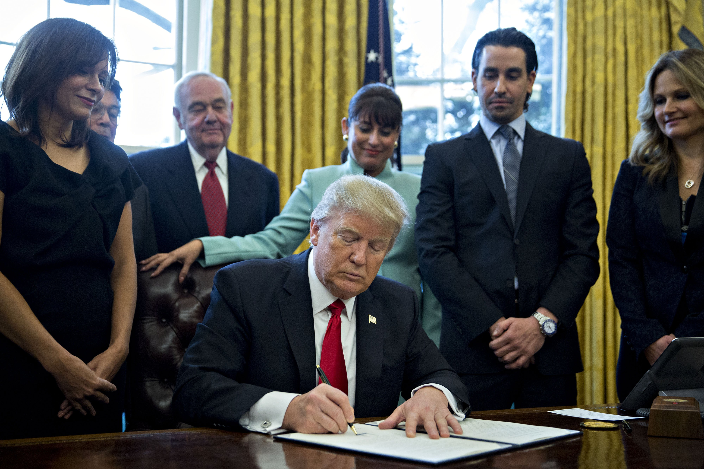

Como resultado de los eventos sucedidos desde la elección del presidente Donald Trump en EEUU, como las acciones en contra de migrantes mexicanos o la posible eliminación del TLCAN, más del 49% de la población mexicana opina que la relación con dicho país es mala o muy mala. Este problema ha despertado un nuevo sentido de nacionalismo en la población, de la cual el 62% opina que México debe mantenerse firme en defender sus intereses, aunque esto lleve a una confrontación con Donald Trump y el gobierno estadounidense. Consecuentemente, se han observado tendencias en las que la sociedad mexicana llama al boicot de marcas estadounidenses en señal de protesta, evitando marcas desde Starbucks hasta McDonald’s, entre otros. Sin embargo, algunos economistas opinan que esto podría afectar la economía nacional en otros modos, ya que muchas de estas empresas operan por medio de marcas mexicanas. El principal problema que enfrenta el pueblo mexicano en este momento es el poder encontrar una solución en la cual se trabaje por el enriquecimiento de la economía nacional, al mismo tiempo que se pueda protestar las acciones del presidente Trump en contra de México.
Las acciones del gobierno estadounidense amenazan con dañar la economía Mexicana, pero la respuesta del pueblo mexicano a boicotear marcas de origen estadounidense también podrían tener repercusiones en la economía nacional.
El gobierno del presidente Donald Trump (causa) vs. el gobierno (intermediario) y los ciudadanos (audiencia) de México.
En México, nivel nacional.
Las legislaciones del gobierno de Trump amenazan las exportaciones nacionales a EEUU, la remesas obtenidas por trabajo migratorio, entre otros; mientras que el boicot a empresas como Starbucks, Coca Cola y McDonald's por mencionar algunas, afectan la economía nacional ya que operan como franquicias por medio de empresas mexicanas y son clientes de proveedores mexicanos, como Bimbo, Alpura, etc.
Desde el comienzo de la presidencia de Donald Trump el 20 de enero del 2017.
En 1978 el gobierno mexicano lanzó una campaña llamada Hecho en México, la cual identificaba los productos hechos en el país gracias a un logo distintivo, esto buscaba fortalecer el mercado interno, aumentando la competitividad de los productos nacionales y fomentando su consumo. Este logo distintivo también es utilizado para favorecer a los productos mexicanos que son exportados, otorgándoles un mayor reconocimiento en el extranjero. En la actualidad, el gobierno está buscando reforzar este sello, otorgando este sello a los productos mexicanos de primera calidad, aumentando el reconocimiento de los artículos que logren obtener esta certificación.
Esta problemática afecta de manera directa a la sociedad, teniendo un impacto negativo en la economía de las personas tanto en México como en Estados Unidos de América, ya que el flujo económico de los 2 paises se ve gravemente disminuido. Estos cambios políticos y económico incrementan costos y disminuyen los ingresos de las personas.